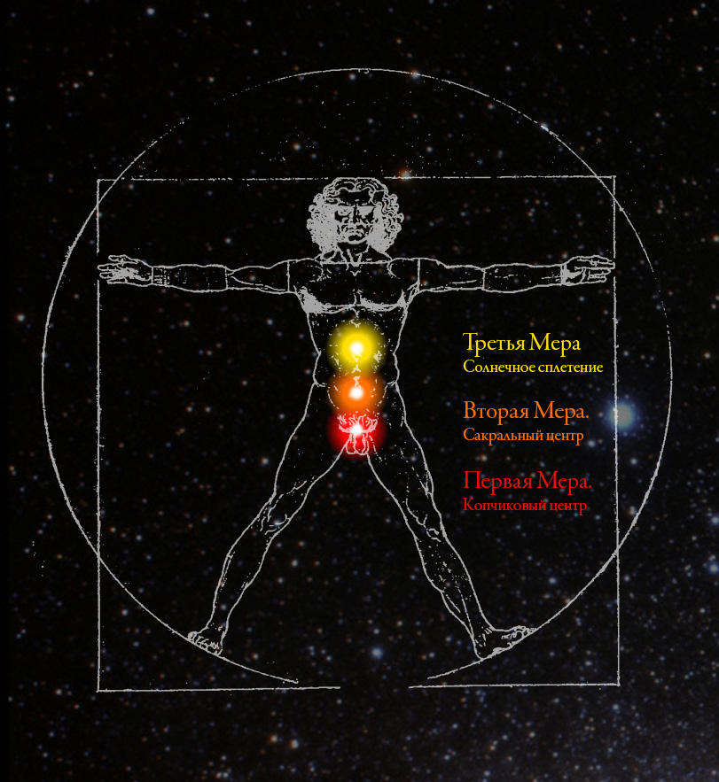

«У вас с матерью одни и те же проблемы в солнечном сплетении, холодные руки» — так мне сказал доктор акупунктуры, когда вы с отцом были в Ванкувере.
К такому состоянию тебя привели твои неразрешенные эмоции: страх, тревоги, беспокойство за будущее.
Когда муж проявляет агрессию и пассивность, то перед русскими женщинами стоит выбор: разводиться или усыновлять. Бабоньки у нас жалостливые, поэтому обычно они решаются на жизнь, где будут терпеть недостойное поведение. «Мать все простит».
Пассивность отца заставила тебя взвалить бремя главы семьи на себя, его агрессивность вынудила тебя делать вид, что глава семьи — это он. Началась постановка спектакля «Голый король», который изматывал тебя годами. Это происходит всегда, когда ты печешься за беспечных. Это причинило вред всем, в том числе отцу, чье эго было раздуто только за счет нашего боязливо-вежливого к нему отношения, когда он проявлял агрессию и когда мы принимали за норму его пассивное равнодушное отношение. А все потому что мы сами в себе имели и агрессию и пассивное равнодушие. Мы толерантны к негативности других в той мере, в какой сами негативны.
Чтобы уметь отрезать, говорить строгое «Нет» и не испытывать при этом сомнений или чувства вины, женщине нужен Характер, но против этого восстают:
— Гендерные роли, которые твердят, что женщина должна быть слабой
— Общество, которое ставит знак равенства между характером и эгоизмом, хотя это разные вещи
— Традиции наставляют народ, указывая ему, что развод — это грех и что «Семья — превыше всего.»
Результаты:
«По данным МВД, в России 40% всех тяжких насильственных преступлений совершается в семье.» — 25 процентов убийств совершается в семье... Новая газета
Анна Жавнерович: «Русская женщина думает, что она должна терпеть»
Что с твоей душой сделалось от таких отношений? Офтальмолог Джерри Теннант говорил, что неразрешенные эмоции препятствуют свободному току энергии в теле. В школе на уроках физики нас учили закону Ома, который гласил, что чем сильнее сопротивление, тем слабее сила тока. Когда ты не осознаешь, не проживаешь свои эмоции, то ты отдаешь свою речь и свое поведение в их власть, что обычно приводит к межличностному конфликту и еще большему количеству негативных эмоций. В качестве примера: когда отец продал без твоего спросу твою машину, ты начала его корить. Если бы ты умела проживать эмоции, то сказала бы: «Игорь, ты мне сделал больно.» И ни слова больше. Простая констатация факта, искреннее проживание ситуации. Ни укоров, ни приглашения к конфликту, который только усугубит энергетическое состояние и твое и отца. А так, и ты произнесла бы то, что чувствуешь и он бы понял то, что смутно подозревает в себе сам. Только психопаты причиняют боль другим, не испытывая при этом ни тени негативных чувств. Но так сложно, потому что для этого надо уметь быть человеком, животное в нас действует по правилу око за око и мы начинаем корить и судить, наказывать другого своими эмоциями, слова лишь идут следом.
Сопротивление и падение напряжения будет там, где у тебя в теле проблемы. Когда животное чего-то опасается, то оно поджимает живот к себе, чтобы защитить ценные органы. Когда животное умеет мыслить, то опасаться оно будет своих собственных мыслей, потому что лимбический эмоциональный мозг воспринимает мысли за действительность. Если это происходит регулярно, то живот будет поджат постоянно, возникнет мышечный спазм, который будет мешать диафрагме свободно ходить вверх и вниз и гонять кровь по телу так, чтобы она доставала до самых ладоней.
— Возникает эмоция как электрический заряд
— Нераспознанная, неразрешенная рассудком эмоция оседает в эфирном, энергетическом теле, в области какого-либо из семи центров
— Электрическое состояние центра воздействует на окружающие ткани
От стресса, зажатости и нехватки кровоснабжения в районе живота:
В Аюрведе говорится о двух взаимосвязанных Агни — Огнях, один из которых находится в животе, а другой в голове. Когда горшочек, который внизу, варит плохо, то и горшочек, который вверху, тоже начинает барахлить, так как для работы ему нужны гормоны и нейромедиаторы, которые производятся из пищи и кислород, который полноценно насыщает кровь только когда расширению легких не препятствует зажатая диафрагма. Теряется со-образ-ительность — cпособность мыслить образами, а не логическими конструкциями (словами, фразами, социальными кодами и установками) Как часто случалось, что когда тебе рассказывали шутку, ты хорошенько смеялась, но потом спрашивала: «А в чем шутка то?». Смеялась ты из-за эмоционального заражения (потому что даешь эмоциям овладевать собой), а шутки не понимала из-за того, что образное мышление на тот момент было отключено. Хорошие шутки всегда ориентированы на образное мышление, которое видит описываемую словами картину сразу и целиком.
Из-за гормонального дисбаланса, вызванного плохим пищеварением, страдает не только мышление, но и эмоциональная сфера. Тебе становится труднее справляться с тревогой и беспокойствами.
Мелатонин производится из серотонина. Серотонин производится микрофлорой кишечника. Одна из возможных причин твоей бессонницы.
Появляется также рассеянность, когда образ действия, которое нужно сделать — проверить время вылета — не может попасть из памяти в твое рассредоточенное сознание.
Самый проблемный контур у большинства людей согласно Джерри Тенанту — это «Желудок-Селезенка», который проходит через лобные доли, воздействует на гормональную систему и половые железы. Лобные доли позволяют нам:
— Достигать долгосрочных целей, они дисциплинируют животные отделы мозга, контролируют эмоции и желания.
— Они дают нам возможность быть человеком и не скатываться на животный уровень поведения
— Дают возможность мыслить причинно-следственными связями, независимо от социальных установок
Здесь важно уловить связь между животом и лбом, между животным и чело-веком. «Чело» означает лоб. Эта связь влияет на то, к какой пище человека больше тянет по жизни — к пище для ума или к пище для желудка. Когда пищеварительные системы работают нормально, то отсутствует желание постоянно чего-нибудь вкусненького перекусывать, потому что с дофамином все в порядке. Человек больше любознателен, чем чревоугоден.
«Дело в том, что углеводы и белки из кишечника всасываются непосредственно в кровь. А вот жиры, в особенности тяжёлые, попадают сначала в лимфу, а только из неё в кровь.» — Лимфа — канализационная система организма
Из-за плохо расщепленных жиров лимфа густеет и двигается медленнее, ее должны хорошо гонять по сосудам сокращения диафрагмы, но этого тоже не происходит в должной мере, потому что диафрагма несвободна из-за стянутых от страха тканей в районе живота. Лимфа, будучи дренажной системой организма, хуже справляется с выводом токсином из тканей, которым нужно от них как-то избавляться и сор из избы они высыпают на кожу.
Когда из-за эмоциональной нестабильности и гормонального дисбаланса нет уверенности и покоя во внутреннем, то человек ищет их во внешнем, в глазах окружающих и становится озабочен своим поведением (правильно ли я поступаю в глазах эгоистичного социума или нет?) и внешним видом.
«Я на тебя смотрю и мне хочется осанку поправить.»
Осанка расправляется естественным образом, когда энергетика добирается до уровня солнечного сплетения, по мере того, как человек учиться понимать и контролировать свои эмоции, желания и подчинять свою жизнь какой-либо цели.
«Профессор Огулов, который мнет славянские животы, говорил о том, как много людей в России часто даже не подозревают о том, как они все внутри пережаты и перекручены. Они не подозревают потому что сознание гаснет вместе со способностью осознавать угасание. Зажатость в солнечном сплетении помимо тушения огня в животе будет ограничивать амплитуду сокращения диафрагмы, будет труднее дышать полной грудью и снабжать тело и мозг кислородом. Из-за стянутости органов будут стягиваться также и мышцы, плечи будут сводится, осанка скругляться, человек как бы засасывается сам в себя и вот она, осанка раба-холопа, испуганного, с пониженной сообразительностью, предпочитающего действовать по инструкциям, да помалкивать — экономить ресурсы ослабевшего мозга.»
Вот такие проблемы появляются у людей из-за того, что им не достает характера и самодостаточности. Такие люди часто спрашивают у других: «Как ты думаешь, как мне поступить?», «Я вот не знаю, как мне быть.» Солнечное сплетение — это центр человеческой самости, его личной силы. Когда энергия до самости достает, то проявляется само-достаточность. Раскрытый, здоровый и свободный центр солнечного сплетения дает человеку волю, трудолюбие, честолюбие, чистоплотность («Я не могу, когда грязно.»), энтузиазм, экстраверсию, жажду опыта, деятельности и движения, предприимчивость и амбиции. Когда человек берет себя в руки, то его руки горят, они теплые. Это то, что тебя объединяло с тетей Люсей из Борового. Это то, что ты была вынуждена затормозить в себе, вступив в брак с отцом, потому что вы с ним на разных частотах, его преобладающая энергетика ниже, а значит медленнее. Страх, выжидательно-оборонительно-выживальщическая позиция по отношению к жизни — это первый рептильный центр, жизнь в зоне комфорта, тяга к пассивности и праздности — это второй. Из этой энергетики тебе и хотелось вылезти самой и вытащить из нее отца. Волевое действие солнечного сплетения включается у отца обычно только во время труда, потому что его умом владеет социальная установка: «На работе работают, а дома отдыхают.» Люди с раскрытым солнечным достигают профессионального успеха и социального статуса, что прекрасно видно из жизни Людмилы Сальковой.
В тексте ниже, с которым ты уже знакома, описано то, что происходит с человеком, когда обстоятельства вынуждают его быть самостоятельным:
«Например, в одном исследовании на обитателей дома престарелых возложили больше ответственности за повседневное принятие решений. Они стали сами отвечать за составление меню на следующий день, запись на социально-культурные мероприятия, выбор растений для своей комнаты и уход за ними, вместо того чтобы перекладывать всю ответственность за это на медсестер и санитарок. В результате пожилые люди стали более активными — они инициировали больше социальных взаимодействий — и описывали себя в раздаваемых анкетах как более счастливых. Улучшение их здоровья отмечали врачи, не знавшие, принадлежат ли обследуемые пациенты к группе с дополнительными обязанностями или к контрольной группе. Важнее всего было то, что показатель смертности в первой группе был вдвое меньше, чем во второй.» — Психология Стресса. Роберт Сапольски
Здоровье, Настроение, Социальность.
Если рассматривать это с позиции энергетики, то людям просто создали обстановку, в которой они были вынуждены опираться на энергетику солнечного сплетения. Многие думают, что центры раскроются, если на них упорно медитировать, но они приходят в активность только благодаря тому или иному образу жизни и мысли, который человек выбирает. На какую волну настроишься, так твой корабль и поплывет. Речь идет именно о настройке или точнее настроении, потому что центры не работают как генераторы, а пропускают различные Меры Энергетики, влияя на гормональную систему и состояние сознания человека. Человек — Мера Всех Вещей. В ходе моих изысканий удалось найти соответствия между центрами, отделами мозга и состояниями сознания:

Первая Мера
Вторая Мера
Третья Мера
Профессор Савельев говорил, что коэффициент различия между структурой лобных долей у двух людей может быть настолько сильный, что если судить только по нему, два этих человека будут относиться к разным биологическим видам. Именно лобные доли дают человеку уникальные качества и характер мышления, которые будут отличать одну личность от другой.
Пример диалога личности с массами или человека с активным центром солнечного сплетения и людей, у которых этот центр не так развит. Разница между аудиторией и Платошкиным в том, что напряжение его личности выше, чем у большинства из аудитории, потому что по уровню своей энергии он лидер, человек, взявший на себя ответственность, что на английском будет take charge — взять напряжение, если дословно. В русском языке хватает выражений, связанных с центрами эфирного тела. О Платошкине можно сказать, что он печется. В отличие от масс он мыслит образами и поэтому красноречив и причинно-следственными связями и поэтому речь у него связная. Человек, который вызвался ему оппонировать, хоть и сам политолог, имеет энергетику на втором уровне массового сознания, поэтому, говоря о пенсионной реформе он оперирует кодом-установкой: «В бюджете мало денег для пенсионеров». Эту установку он услышал в масс-медиа и принял как должное без критического анализа, потому что на пытливость ума ему не хватает энергетики, напряжения. Платошкин, который мыслит образами и причинно-следственными связями отвечает ему, что это деньги людей, а не бюджета, людей, которые, работая, отдавали часть своего заработка государству. Так как его лобные доли контролируют лимбическую систему, а не наоборот, то он может воздействовать мыслью на гормональный фон (гормональная ось человека стартует в лимбической системе) и приправлять речь адреналином, усиливая правду эмоциональным зарядом. У Платошкина есть Характер. Это слышно по его голосу. В даосской традиции такая сила называется мужской, направленной вовне энергией — Янь. Вот еще несколько примеров голосов людей-пассионариев, с Характером, с активным солнечным сплетением, обрати внимание на то, как они произносят букву «р»:
Солнечное сплетение всегда приходит в активность, когда человек подчиняет себя какой-либо идее или цели. В Советском Союзе это было распространено в массовом и коллективном масштабе. Несмотря на темные стороны: контроль над мыслью, давление коллектива над личностью, люди были простодушнее и приветливее, у них чище речь и приятнее голоса. Это слышно в советских фильмах, поставленных до начала эпохи застоя.
Давай еще раз посмотрим на схему:
| Центр | Отдел мозга |
|---|---|
| Солнечное сплетение | Мозг Человека |
| Сакральный центр | Мозг Млекопитающего |
| Копчиковый центр | Мозг Рептилии |
Начиная с эпохи застоя умы людей захватила идея потребления, жизни в свое удовольствие. Дядю Федора стали готовить к тому, что, чтобы купить что-то ненужное, нужно продать что-то ненужное. В это же время произошел отказ от привязки доллара к золоту, мир стал заполняться халявными деньгами, созданными из пустоты. В 1960-70-е произошла сексуальная революция, которая раскрепостила людей в половом отношении. Энергетику людей стали спускать на Вторую Меру, которая сейчас находится на пике в двух своих проявлениях:
| Кнут | Пряник |
|---|---|
| Экономического и социального напряжения | Безудержного потребления и тяги к удовольствиям |
| Amygdala (Страх) | Nucleus Accumbens (Наслаждение) |
В людях стали воспитывать млекопитающих, стегая кнутом по солнечному сплетению человечества, ухудшая его работу, что подтверждается мировой статистикой как заболеваний жкт, так и психологических расстройств.
Советский проект взывал к чувствам, которые были обратны нынешнему потребительскому строю:
— Вместо удовольствия потребления — радость труда
— Вместо экономического напряжения — уверенность в будущем
Самое главное — идеалом в СССР был «человек общественный», а не «человек семейный».
«Человек, который заботится только о себе и своей семье, подобен свинье, которая заботится о своих поросятах» — один римский сенатор.
Это было резким и смелым высказыванием Платошкина всему обществу, которое основано на семейных ценностях. Он так говорит просто потому что его психика выше по энергии и способна интуитивно понимать проблему. В гормональной оси человека второму центру соответствуют половые железы. В славянской системе этот центр называется Зарод и мотивирующая сила, которая проникает в сакральный (sacral — священный) центр, известна каждому эволюционному биологу — все организмы движимы священным долгом продолжения рода — распространения своего генетического материала во времени и пространстве любой ценой. Сила сакрального центра, которая сейчас мотивирует подавляющее большинство людей, приводит к таким результатам:
Напряжение крайней бедности.
Чем сложнее выжить, тем многочисленнее должно быть потомство — это биологическая стратегия, заложенная в теле на уровне инстинктов, на уровне лимбической системы, стратегия нацеленная на количество. Мне рассказывали об одном жителе африканской страны, который признавал, что наплодил себе детей как мальков специально, впрок, зная, что некоторые из них погибнут. Чем больше, тем лучше, больше шансов что кто-то останется за тобой ухаживать. На втором уровне человек опирается не на самость, собственную личность, чьи особенности записаны в лобных долях, а на правило: «жить просто как все живут». Когда родовая лимбическая система управляет мыслью, то человек особо не задумывается, живет, как велят инстинкты, тем более эти инстинкты закреплены в социальных кодах и установках. «Семья должна быть большой.»
Млекопитающие — это в основном стадные животные и держаться коллектива им приказывают команды мозга млекопитающего — лимбической системы, которые будут поощрять дофамином (NA) за конформизм и наказывать гормонами стресса (AD) за попытки индивидуализма.«Мы переживали, что о нас подумают.»
Удовольствие крайнего богатства.
Чем лучше условия для потомства, тем больше шансов для его выживания. Это тоже биологическая стратегия, только нацеленная на качество, а не на количество, это тоже инстинкт, который будет руководить человеком даже если детей у него и нет вовсе. Чтобы обогащаться ему нужна психологическая мотивация. Мотивация — это дофамин, который поставляется в мозг лимбической системой, которая воспринимает деньги и власть как ресурс для наилучшего выживания генов. Доминантным самцам достаются лучшие самки в стаде. Так сила рода движет теми, кому и дети не нужны-то особо.
Ресурсы этой группы людей могли бы быть распределены на подъем стран третьего мира со второго уровня на третий, на образ-ование, на становление личностей и выход из коллективного инстинктивного уровня, что привело бы к колоссальным позитивным последствиям: снижению уровня рождаемости, исчезновению домашнего насилия и улучшению здоровья людей, которое во многом зависит от уровня стресса. Но этого не происходит в массовом масштабе.
Самое главное в жизни человека — это семья, его собственный род, потому что за пределами домашнего очага его обычно ждет холодный и равнодушный мир людей, для которых самое главное – это семья, их собственный род, а не он. И круг замкнулся. И женщины, которые терпят над собой насилие, не решаются что-то сказать, потому что вокруг них млекопитающие, которые задавят ее своим коллективным мнением о семье, как о главной ценности.
«Столь терпимое отношение к физическому насилию в патриархальных обществах объясняется тем, что человек там рассматривается не как отдельная, наделенная всеми правами и обязанностями личность, что характерно для Запада, а в первую очередь как представитель семьи и рода.»" — Корни домашнего насилия
В патриархальных обществах отец — это глава семьи, даже если это не так, даже если весь вес забот лежит на скругленных женских плечах. И он будет отстаивать этот статус с агрессией. «Я здесь главный! Я!» — говорил разъеренный отец после одной из ссор на Бульваре Мира. Прятаться за статус и гневно защищать его склонны те, у кого занижена самооценка, терпеть его агрессию будут люди, у которых также занижена самооценка.
Ты говорила о том, что единственное, о чем вы жалеете так это то, что переживали (AD) насчет того, что подумают о вас окружающие, что у вас у обоих была низкая самооценка. Она у вас была не низкая, а неразвитая. Шкала самооценки определяет не ее высоту или низость, а разницу между Самооценкой и «Что люди скажут?» Человек способен сам оценивать себя, только когда он самодостаточен.
| «Что люди скажут?» | Самооценка |
|---|---|
| Лимбическая система | Лобные доли |
| Что такое хорошо (NA), что такое плохо (AD) с позиции общества | Вред я приношу или пользу? |
| Коды-установки | Причины и следствия |
Разница между этими двумя в том, что стадо судит, а человек пытается понять. Судить — это просто, быстро, эффективно, а на «понимать» надо расходовать энергетические ресурсы. Животное не будет их тратить, если от этого не зависит косвенно или напрямую его жизнь или жизнь его потомков. Сколько в нас усилий понять и разобраться, столько в нас человека.
Отца воспитывали люди со слабой самооценкой кнутом и пряником «хорошо» и «плохо», «можно» и «нельзя». Его душа контужена. Мне хватило одной ночи у бабы Гали, чтобы испугаться бездушной серости, которой было пропитано все в той квартире. Отец в отличие от меня рос в этой атмосфере, в которой дышать было нечем. Души его родителей жили в аду, день за днем жарясь на сковородках кухонной брани. Ад — это не под землей, это состояние сознания, не ведающее раскаяния. Они никогда не просили прощения друг у друга, не знали ни искренности, ни доверия, ни один их конфликт не разрешался, костры ругани затихали, только для того, чтобы затем вспыхнуть с новой силой. Мои обиды к отцу, к его грубости и агрессии развеялись, когда я увидел мальчика со светлой душой, который не знает, куда ему деться, куда спрятаться от грызни рептилий, которые только выглядят как люди. Отец чудом сохранил свой юмор и свою доброту, которые в нем есть. В какой-то мере спасло Боровое — территория, через которую сквозят светлые силы и честолюбивая тетка с трезвой головой.
Отца в полноценном смысле этого слова, как примера мужества и ответственности у него не было. Юрий Платонов его бросил, Владимира Семенова трудно назвать образцовым мужчиной.
Как ему ребенку было спастись? Как бабе Гале было защититься от этого всего? Выход они нашли в том, чтобы покрыть свою душу броней, и из под этой брони, как из танка звучал один и тот же холодный, могильный и серьезный голос. «Ты прям как баба Галя сейчас говоришь». Рассказывая новость о том, что у России появились новые средства ядерной обороны, отец полон энтузиазма и радуется как маленький ребенок, который мечтает о надежной защите на поле брани. Родители давно умерли, но их дрязги до сих пор звенят в его душе, которая жаждет, чтобы конфликт разрешился и ищет этого разрешения в ругани телешоу, в которые его как-будто засасывает как в черную дыру
Страх делает человека животным, пожизненным заключенным на зоне комфорта. Из всех вариантов судьбы человек выбирает самый безопасный и неинтересный, избегает риска — он плохо справляется с неизвестностью и неопределенностью. Выбирает переехать в Морден, а не в большой город, потому что там свое племя, там безопаснее. Не хочет уезжать из Мордена, потому что в другом месте — Неизвестность (AD), а здесь место уже насижено и тепло (NA). Когда человеку страшно что-то терять, то он будет отстаивать это с агрессией.
Отец передает эту эстафету дальше, говоря мне, что я должен слушать большинство и жить по правилам и установкам, а индивидуалистом я быть не должен. Слова эти были сказаны, когда его кровь была взбаламучена агрессивным гормональным фоном, созданным амигдалярным комплексом.
«Склонны к насильственным действиям, как правило, люди с заниженной самооценкой и низким социальным статусом (насилие по отношению к домашним у них может играть компенсаторную роль), неспособные контролировать свои эмоции, регулярно употребляющие алкоголь. Кроме того, исследования, проведенные в самых разных странах (Индонезии, Никарагуа, Испании, США, Венесуэле), показывают, что те, кто в детстве подвергался побоям или наблюдал, как отец избивает мать, сами готовы применять насилие по отношению к близким. Так, вероятность того, что мальчик, отец которого жестоко обращается с матерью, в будущем так же будет обращаться со своей женой, в десять раз выше, чем у его сверстника, растущего в благополучной семье. То есть модель семейных отношений человек, как правило, усваивает в раннем возрасте и затем, вступив в брак и обзаведясь детьми, ее воспроизводит. И так может продолжаться из поколения в поколение.
Если говорить о семье в целом, то в семьях, где взаимодействие между супругами строится вокруг употребления алкоголя, насилие процветает особенно часто, поскольку на поздних стадиях алкоголизма состояние опьянения обычно сопровождается повышенной раздражительностью, гневливостью, агрессивностью. Для таких семей характерна известная в психологии модель созависимых отношений. Родственники алкоголика, стремясь адаптироваться к больному, подстраивают свое поведение под его состояние: помогают ему разрешать возникающие в социальной жизни (например, на работе) трудности, испытывают чувство вины за его поступки и принимают на себя ответственность за них. Для созависимых семей характерно нарушение межличностных границ: их члены постоянно «перекачивают» свои эмоции (особенно отрицательные) друг в друга. Человек воспринимает другого человека не как отдельную личность со своими чувствами, мнениями, желаниями, интересами, а как продолжение себя самого и, совершая насилие, действует по принципу: если плохо мне, пусть будет плохо всем вокруг. Жертвам при этом трудно противостоять агрессии, так как они просто не представляют, что защищать себя, отстаивать свои интересы вообще возможно.
Многие исследователи указывают на то, что модель созависимых отношений может реализоваться и в семье, где нет алкоголиков или наркоманов, например, если такая модель кем-то из супругов усвоена в родительском доме." — Корни домашнего насилия
То, что описано — это крайний пример, далекий от ваших взаимоотношений, но ты можешь разглядеть знакомые черты. Отец не всегда различает, где кончается он, его личность и ее убеждения и начинается личность другого, где прерывается самосознание человеческих лобных долей и где начинает вмешиваться животная лимбическая система. Он рос в доме, где ситуация с этим была в разы хуже. Его пассивность и агрессия, которые заставили тебя когда-то задуматься о разводе — во многом следствие дрессировки эмоционального мозга, у которого две мотивации:
Желание наслаждаться, ведущее к пассивности (NA)
Страх, ведущий к агрессии (AD)
Личные границы не всегда различает он, не всегда различаешь ты, не всегда различают миллиарды семей во всех странах мира и чем консервативнее общество, тем ярче это выражено. Проводили исследования, где сравнивали мозг консервативных людей и тех, кто более либерален. У консервативного активнее работает Amygdala, он плохо справляется с неизвестностью и неопределенностью, у либерального активнее лобные доли. Это разница между консервативными установками и способностью рассуждать, между эмоциональными и ментальными людьми.
Стихии, которые не видимы, но всегда и непрерывно влияют на людское поведение, очень точно описывают подобное слипание людей друг с другом, в которых отношения строятся на созависимости.
| Солнечное Сплетение | Ум | Огонь |
| Сакральный центр | Эмоции | Вода |
Огонь ума разъединяет людей и проясняет им сознание, делает самосознательными. Вода объединяет людей в созависимую формацию и размывает их характеры.
Личностные границы люди не различают, потому что личности в этот момент как таковой нет, есть эмоциональный поток, e-motion, который тебя несет, в котором другой — это продолжение тебя самого, продолжение твоих страхов или желаний, например желания, чтобы другой выучил английский, которое за годы его неисполнения накопило очень сильный энергетический потенциал. На работе я замечаю как эмоциональные люди злятся на физические объекты, которые становятся продолжением их самих, но которые не хотят подчиняться их желаниям. Не сообразив, как устроены инструменты или как работать с материалом, люди делают эти объекты виноватыми, кроют их матом. Люди также злятся на ментальные объекты — умы других, которые не подчиняются их желаниям или не выполняют их с должной скоростью и эффективностью. Все что эмоционально, то бессознательно и потому только через какое-то время, может даже через годы человек удивляется тому, зачем он себя так вел.
Созависимые отношения — это та самая проблема семей, которая подразумевается, когда люди говорят, что «Семья — это тренинговый центр по избавлению от собственного эгоизма.» Только не от эгоизма, а от перекачивания друг в друга вампирических эмоций. Отец перекачивает в тебя эмоции, которые в него перекачиваются политическими дебатами. Ты перекачиваешь в него эмоции своего недовольства его поведением. На заднем плане любой домашней ссоры текут токи неосознанных, нераспознанных эмоций. Слова, которые говорят ссорящиеся, второстепенны по отношению к эмоциям. Но наше подсознание осведомлено об эмоциях и желаниях, которые испытываем мы сами и те, кто нас окружает.
— Еще до того, как попросить отца поехать с вами погулять, ты неосознанно чувствовала, что он не захочет, а он чувствовал твое желание, чтобы он поехал и уже был готов к обороне. Конфликт зародился еще до того, как вы начали произносить слова, на втором плане эмоций, который средним человеком не распознается, потому что он не дорос до третьего плана ума.
— Еще до того, как завести с отцом разговор о переезде в другой город из Мордена, ты неосознанно чувствовала, что ему это не понравится. Он чувствовал, что у вас есть хотение (NA), которое противоречит его хотению (NA) и начал защищать свое хотение (AD).
— Еще до того, как впервые заговорить с отцом о переезде в Канаду...
И так далее.
Человек также чувствует эмоциональное отношение, которое транслируется другими по отношению к нему. Когда у вас в процессе изучения английского возникают конфликты, то это потому что подсознательная эмоциональная часть отца реагирует на отношение твоей подсознательной эмоциональной части к нему. На переднем плане вы перебрасываетесь словами, на заднем плане идет война эмоций. Если прогнать через переводчик с логики на эмоции, то получится:
«Как же ты не можешь это понять?» — «Я раздражена от того, какой ты глупый!»
«Да я просто не знаю этого, ты знаешь, а я не знаю, я не учил!» — «Мне не нравится, когда меня считают глупым!»
Представь, как преобразились бы разговоры, если бы люди говорили языком эмоций:
— Таня, я взволнован международной ситуацией!
— Игорь, я испытываю недовольство от того, что ты взволнован без всякой пользы!
— Ах так! Теперь Таня я раздражен от того, что ты не желаешь волноваться вместе со мной! Неужели тебе не понятно, что я включаю свои передачи на полную громкость, чтобы ты присоединилась со мной к волнению, которое мне так дорого!
Неосознанное эмоциональное отношение к другому — это также вера в человека. Если в человека верить, то у него все получится. Обычно люди верят так, что получается как всегда, а не как лучше, потому что вера бывает также негативной. Еще до того, как попросить отца делать то, что ему не хочется делать, в тебе присутствует эмоциональное отношение, еще до произнесенных слов, на уровне неосознаваемых тобой эмоций ты уже веришь, что он не будет. «По вере вашей...». Эта вера, эмоциональное отношение сформировано многолетним опытом столкновения с отцовской пассивностью и агрессией, которую в нем воспитали родители. Поэтому так трудно по-настоящему прощать, ведь это значит потерять веру в прошлое, внутренне отпустить его. Есть такие, кому даже и прощать не надо, кто способен верить в человека сквозь все его больное и негативное прошлое, сквозь маску личности.
Простил ли я отца окончательно? Нет. Но я пережил момент, когда получилось увидеть и понять, что его прошлое с ним сделало. Большая часть груза обид на него была снята с моих плеч. Я понимаю умом его проблему, понимаю теоретически силы, которые его контролируют, но не живу этим пониманием и не свободен от негативной веры в его адрес.
Человеку не по себе, когда в его адрес имеется (или он сам так мнит) негативное эмоциональное отношение, когда на него направлена негативная вера. Человеку бывает не по себе перед выступлением на публике. Человеку не по себе, когда за ним пристально и критически наблюдают, когда он пытается что-то сделать, решить какую-то проблему.
Однажды на работе перед нами пытался припарковать свою машину мужчина. Нас было трое и мы смотрели, ожидая. Какой-то коллективный гипноз нас охватил. У него получилось только с пятой-шестой попытки. «Hi guys, I park really bad under pressure.»
Он испытывал давление наших ожиданий. Как выступающий на публике испытывает давление ожиданий зрителей, как человек, решающий проблему, испытывает давление ожиданий того, кто за ним наблюдает. Как отец испытывает давление твоих ожиданий. Как Полина испытывала давление ваших ожиданий, когда от нее зависело, куда вы переедете из Мордена. Как баба Галя постоянно ожидала ругань в свой адрес, когда вытирала стол руками, трясшимися от страха.
Что такое ожидание? Все просто. Это тонкая форма алчности. Когда мы ожидаем, то мы чего-то алчем, мы хотим. Человеку не по себе от энергии алчности, направленной в его сторону. Настолько в эту энергию мы как люди погружены, что не замечаем ее. Как рыба, не знает о том, что она находится в Воде, пока ее не вытащат на Воздух.
Есть еще одно правило, которое работает. Подозревать и мнить в других мы можем только то, что пока еще есть в нас самих. Нам не по себе от ожиданий других только тогда, когда мы сами с усами, сами ожидальщики. Мы переживаем о том, как другие люди нас оценят, только тогда, когда сами оцениваем других людей.
«Относись к людям так, как хочешь, чтобы относились к тебе» — Золотое Правило нравственности.
Свободнее всего человеку там, где нет алчности. Свободнее всего человеку тогда, когда в нем нет алчности. Исчезнет алчность — исчезнут и ожидания. Появится доброе отчаяние. Пишу «доброе», потому что расхожий смысл слова «отчаяние» депрессивный — человек в отчаянии перестает ждать хорошего в своей жизни. На самом деле «чаять» означает «ждать». Отчаянные не ждут ничего, не алчут ни хорошего (NA) ни плохого (AD) находят в себе силу для беспричинного добра, для того, чтобы давать, а не брать. Ведь обычно, если мы что-то делаем, то ожидаем что-то взамен. Мы всегда действуем по какой-то причине, чтобы получить что-то (NA) или чтобы избежать чего-то (AD). Если внимательно проанализировать свои слова и поступки, то это станет очевидно. На Востоке это называется Карма — действия, у которых есть причина.
Выходит, что полюбить человека по-настоящему мы сможем только тогда, когда нам от него ничего не будет нужно, когда мы примем свое одиночество, которого мы все так страшимся. Выходит, что негативная вера в человека, негативное к нему отношение (и такое же отношение к себе самому/самой, потому что Золотое Правило работает в обе стороны) у нас появляется тогда, когда нам что-то от него нужно, а позитивная вера в человека у нас появляется, когда мы находим в себе силу давать. Давать без причины и без оглядки. Позитивная вера дала возможность женщине из ролика простить чернокожего убийцу, потому что в ней была любовь как отдача. Настоящая уверенность будет только в тех, кому есть, что давать. Давать значит прощать. For Give.
Так я понял парадокс правильных человеческих отношений. Чтобы правильно относиться к человеку, нужно отказаться от него, от обладания им. Когда человек начинает понимать свои границы, отвязывать свои ожидания, страхи и желания от близких, понимая их эгоистичную природу, то он начинает осознавать, что он одинок. Осознавать не умом, не теорией, а самим своим нутром. Он становится немного ближе к собственной душе, которая всегда свободна от алчности и нет у нее ни страхов, ни желаний, ни ожиданий, ни претензий к кому-либо. Только она дает человеку ответ на вопрос «Как мне стать свободной?», который ты когда-то задавала мне в Whatsapp. Если оба супруга понимают необходимость этого процесса, то рано или поздно они приходят к такой внутренней свободе и треннинговый центр под названием семья выполняет свою миссию, доводя людей до момента под названием «Горько!», сначала приходит сердечное понимание, мужу и жене становится горько друг за друга, потом следует прощение.
«Прощение останавливает колесо действия или то, что вы называете кармой [действие, основанное на причинах].» — Материалы РА
«Ты сам и я сама. Мы перестали судить друг друга и самих себя, у нас появились силы на адекватную самооценку, мы самодостаточны и можем начать строить конструктивные отношения.»
Встречаются два осознанных одиночества. Психика приходит в равновесие, физическое здоровье послушно выравнивается вслед за психикой.
«Следующий основной луч — желтый [Центр солнечного сплетения]. Этот луч — великий краеугольный камень. На этом луче потенциал ума/тела достигает полнейшего равновесия.» — Материалы РА
Аюрведа учит, что в эфирном теле дуют пять ветров. Один из них зовется Сам-ана Вайю (Самана — на санскрите самостоятельный) и в расстройство он приходит, когда у человека нет характера, когда есть трудности с пониманием личностных границ. Человек или переходит границы другой личности или дает другим личностям влезать за пределы своих границ. Самана Вайю действует в зоне от сердца до солнечного сплетения, отвечает за усвоение телом еды и воды и связан с желудком.
Желание того, что отец изменится (NA) приводит к расстройству от того, что этого не происходит и к ссорам (AD). Трудность в том, что твои требования к отцу — быть нормальным семьянином — нормальные, здравые и адекватные. С позиции семейных ценностей. Но они эгоистичны с позиции вас как двух одиночеств, каждое из которых со своим трудным детством. Проблема ведь не в том, что он недостаточно хороший семьянин, а в том что у него комплекс неполноценности, неразвитая самооценка, которая ведет и к высокомерию (NA) и к самоуничижению (AD) и к тяге к удовольствиям (NA) и к агрессии (AD). У кого самооценка нормальная, тот не будет спускаться до низменных форм поведения, ему не даст самосознание.
Что делать? Сказать: «Будь добр Игорь, избавься от своей детской боли и страха, которые тебя сделали таким, потому что из-за них ты не соответствуешь социальным семейным установкам»?
Фильм «Дорога» Федерико Феллини о нем в какой-то мере, о всех нас. Джельсомина — это искренняя детская душа, Зампано — это все то грубое, что появляется в человеке от инстинктов и от воспитания родителями, которые свои инстинкты не контролируют.
Равнодушное отношение к изучению английского, к канадской жизни — это следствие, а не причина. Причина в том, что интерес к супружеским отношениям в отце утрачен, потому что вы очень долго жили вместе, забыв о том, что вы пара. Вращаясь вокруг планеты быта и работы вы отдалились друг от друга под действием центробежных сил. Теперь и в Минск не съездить вместе. О чем говорить вдвоем на протяжении такого длительного периода времени? Когда такое было в последний раз? Отцу возможно неловко, да он и признавать это в себе не хочет.
Тебе трудно все это было увидеть в таком ключе раньше, потому что семейные ценности были важнее личностных. Тебе важно было сохранить семью любой ценой. Это вшито в человеческое подсознание — обеспечить наилучшие возможности для сохранения и передачи генов. Так люди добровольно жертвуют Идолу Семьи свое здоровье, а многие и свои жизни, как показывает статистика.
Стихии Огня соответствует чувство зрения. В том числе зрение ума, которое способно видеть очевидное — то, что к тебе охладели. Женщина увидит. Мать, для которой главное семья — нет.
Подытожим:
Проблемы человеческих отношений связаны с родовой энергетикой Второй Меры, агрессивными эмоциями и желаниями, алчностью и страхом, которые влияют на лимбическую систему (с ее центрами удовольствия — Nucleus Accumbens и страха / агрессии — Amygdala). Все эти явления приводят в разлад работу центра солнечного сплетения, что только добавляет человеку проблем, как психологических, так и физиологических.
КАНАДА, СОЛНЕЧНОЕ СПЛЕТЕНИЕ И РАЗНИЦА В ДОХОДАХ
Солнечное сплетение населения Канады — одно из самых здоровых в мире. Канадцы приветливы, учтивы, экстравертны, они сознательны в социальном смысле, чистоплотные. Они внимательнее к деталям, что видно в благоустройстве городов. Объем внимания напрямую зависит от уровня энергетики, что на уровне физического тела проявляется как хороший метаболизм — то самое напряжение, о котором говорил офтальмолог. Чем выше метаболизм, скорость обмена веществ, тем сильнее стойкость к холоду. Чем лучше работа третьего центра, тем больше в человеке стихии Огня. Люди здесь не так сильно думают «Что люди подумают?», потому что единицей общества является человек, личность, а не семья (лобные доли, а не лимбическая система). Канадцы остро чувствуют личностные границы других людей. Немыслимо представить в Караганде канадское «Sorry the bus is full», где полнота автобуса определяется трением невидимых оболочек личного пространства пассажиров, а не тем, что чьи-то волосы уже кому-то лезут в нос.
Учтивость и желание помочь — тоже следствие энергетики, которая ближе к уровню «Человек», чем она в Казахстане, где в аэропорту ты столкнулась:
С равнодушием — пассивностью — NA
C хамством — агрессией — AD
Душа, не совсем уснувшая, хочет улететь из этого всего поскорее, но ее не пускают на самолет, говорят, что слишком поздно, ваши крылья уже не действительны. Два этих качества — пассивность и агрессия, заставляют людей, у которых третий центр (самостоятельность и предприимчивость) еще работает, задуматься о разводе с родиной.
По аналогии с Канадой и Казахстаном, ты можешь сравнить Караганду и Алмату, Москву и Петербург и оценить коэффициент серости — насколько Огонь — тепло приветливых характеров преобладает над Водой — холодными родовыми желаниями. В одном случае людьми движет родовая нажива и город становится одним большим торговым центром, в котором люди маются, а не живут. В другом случае присутствуют культурные и социальные интересы, люди более открыты и приветливы. (Москва меняется в лучшую сторону).
Есть еще один момент, связанный с Канадой:
«Нуклеа́рная семья́ (англ. nuclear family) (также супружеская или партнёрская семья) — семья, состоящая из родителей (родителя) и детей, либо только из супругов, на первый план выдвигаются при этом отношения между супругами (представителями одного поколения), а не отношения между представителями разных поколений (родителями и детьми). Противопоставляется расширенной (или сложной) патриархальной семье традиционного типа, в состав которой входит несколько супружеских пар или, как минимум, несколько поколений взрослых людей.»
«Переход от сложной семьи к нуклеарной идёт при переходе от традиционного к индустриальному обществу.»
«В России переход от традиционной к нуклеарной семье произошел в XX веке под влиянием индустриализации и урбанизации.»
В Англии индустриализация и урбанизация начались гораздо раньше, в 18-м веке. С этими явлениями связывают рост английского (а значит канадского, американского, австралийского и новозеландского) индивидуализма и либерализма и отход от традиционной патриархальной семьи к нуклеарной. Это естественно, потому что раньше окружающие экономические условия были такие, что человеку нужно было держаться за род, чтобы выжить. В рыночно-промышленной экономике появились социальные лифты для тех, кто может и хочет использовать свой ум. У либеральных индивидуалистов развиты лобные доли, самостоятельность и своеволие, что имело свои позитивные и негативные следствия для всех территорий, завоеванных англосаксонской цивилизацией. Ум изобретателен, он же эгоистичен, бессердечен, холоден и жесток.
Распад СССР и разграбление России случились во многом благодаря усилиям индивидуалистов из англосаксонских нуклеарных семей совместно с российскими индивидуалистами из бизнес и госструктур. Бороться за свои права и относиться требовательно к государству в России не очень принято, потому что в патриархальных семьях в отличие от семей нуклеарных учат слушаться старшего, каким бы он не был, опираться на мнение старшего, а если что не так, то делать старшего козлом отпущения. По опросам населения за бедственную ситуацию в стране отвечает Путин, патриарх. Так считает большинство. Не «мы все отвечаем», а «он». Поэтому никакого сплоченного сопротивления разграблению не оказывается. Обеднение населения привело к тому, что женщинам — жертвам домашнего насилия в патриархальных преимущественно семьях, стало боязно отстаивать свою личность. Куда ей деться одной в бедной стране, как детей прокормить? Такие мысли ее останавливают. Расходиться и отстаивать свои права проще в экономически благоприятных странах, где человеку не надо держаться за свой род, чтобы выжить, где женщине проще допустить в свою голову мысль «я сама справлюсь» и поэтому иметь больше суверенитета в конфликтных ситуациях.
Казалось бы какая связь между английской промышленной революцией и тем, что у тебя нет ровной осанки; между желанием масс «просто жить», установкой «семья — важнее всего» и твоими проблемами с желудком и эмоциональной сферой; между канадским уважительным отношением к человеческой личности, которое нам так приятно и удивительно и беспощадным грабежом колоний, прибыль от которого и дала англичанам возможность совершить промышленный переворот в своей стране, приведший к росту нуклеарных семей и индивидуализма?
В Казахстане промышленность появилась благодаря СССР, а не потому что казахское население страны само вызрело до перехода от традиционного к индустриальному обществу, где человека оценивают по его достижениям, а не его родовым связям.
В патриархальных обществах получается закономерная ситуация:
В семье — подчиненность несправедливому родителю / мужу / жене, который не признает в тебе самостоятельную личность.
В обществе — подчиненность несправедливому правителю, который не признает в народе самостоятельных личностей.
Поэтому так значима роль семьи и отношений в ней. Она задает характер общества. Но еще значимее роль здравой личности — человека, потому что именно такие способны создавать семью, в которой будут воспитывать человеческих личностей с характером.
| Нуклеарная семья | Личности | Энергия Огня | Третий Центр | Свободное мышление, преодолевающее коды-установки | Ум |
| Патриархальная традиционная семья | Массы | Энергия Воды | Второй Центр | Коды-установки («Традиции»), за нарушение которых будет наказание (AD) | Эмоции |
В первом случае человеческие существа склеиваются Водой в одну массу, во втором — Огонь разделяет их на личности. Вода остается на месте, даже если сильно волнуется. Огонь — это движение и перемены. Скорость жизни и скорость перемен на планете непрерывно увеличивались благодаря Огню Умов, которые с каждым веком все активнее и во все более массовом порядке начали озаряться новыми идеями, открытиями и изобретениями.
Люди никогда не прекращают заполнять излучениями своих мыслей и желаний окружающее их пространство. Концентрат энергии второго центра, энергии физических желаний как раз в торговых центрах ты и ощущаешь. Теряется ясность, сознание размывается и человек, которому много для жизни не нужно, чувствует, что начинает там маяться. Пусть он после этого отправиться в библиотеку и побудет там, где тихий шепот бесчисленных мыслей, которые прячутся в книгах, аккуратно разбудит его ум, вернет ему ясность.
Чем сильнее люди движимы родовой энергетикой, приоритетом для которой является свой род, а не человек и общество, тем сильнее будет разрыв между богатыми и бедными, тем выше уровень кумовства, коррупции, стресса, плохого здоровья и преступности в социуме. Когда элита видит, что более высокие налоги, которые она платит, не дают ей соответствующих более высоких социальных выгод, то она лоббирует в правительстве снижение налогов для себя и социальных трат, в том числе на образование, которое могло бы вытащить людей за головы из напряжения крайней бедности.
Лицезрея недоступную роскошь люди будут завидовать и обращать пристальное внимание на тему социального статуса, который есть ни что иное, как ранг в стаде млекопитающих, будут сплетничать и судачить, повышая (NA) или понижая (AD) ранг обсуждаемого человека в глазах собеседника. Те, кому важен статус, будут иметь проблемы с самооценкой. Их будет бросать то в высокомерие (NA), то в самоуничижение (AD). Возникнет феномен, который на английском называется Tall Poppies (Высокие маки, которые подрезают) или Crab Bucket (Ведро с крабами, где того, кто хочет выбраться, хватают за конечности), когда человеку трудно вырваться из своей среды из-за давления общественного мнения, которое завистливо и не любит выскочек. «Мы переживали, что о нас подумают.» В таких обществах падает уровень доверия как между людьми, так и между людьми и государством, люди меньше участвуют в социальных организациях, явка на голосованиях ниже. «Там все за нас решают.» Совсем как в доме престарелых до эксперимента.
Количество денег (долга) росло в США одновременно с ростом потребления и разницей в доходах. Год от года увеличивались потребительские запросы на «нормальную жизнь». В 1978 году, когда эра потребления только начинала набирать обороты, американской семье нужно было $19 600 для комфортной жизни, на $1960 выше среднего семейного дохода по стране, в 1998 почти каждая семья, даже та, чьей доход был гораздо выше среднего, говорила, что ей не хватает денег на комфортную жизнь. Реклама всегда целится в лимбическую систему, создавая образ желаемого. У человека появляется желание (NA), отсутствие возможности его реализовать вызывает неудовлетворенность (AD). В итоге в странах, где образ «нормальной жизни», навязанный массмедиа и рекламой был менее финансово доступным для населения, у людей было отмечено повышенное систолическое давление, что наверняка связано с большим количеством гормонов стресса в крови. Чем дальше желаемое (NA) отходит от возможного, тем больше стресса возникает в человеке (AD). Искусственным способом создается психологический дискомфорт, выгодный банкам, которые разрешат потребительскую неудовлетворенность, предлагая деньги (NA) в обмен на кредитный плен (AD). В 1980-х Рональд Рейган снизил налоги для самой богатой части населения более чем в два раза, то же самое сделала Маргарет Тэтчер. Их целью было увеличить приток денег в экономику, больше производить, увеличить предложение. Что и было сделано, на людей посыпались рекламные предложения со всех сторон. Оба руководителя поддерживали принципы протестантской этики, один из которых заключается в том, что тяжелый, земной «недуховный» труд, в том числе труд ради накопления капитала — это тоже путь к Богу. Людям сказали, что надо работать больше. Работай и Потребляй. «Work Hard and Live Large» — как было написано на одном канадском биллборде. Надо было убедить белок вращать колеса алчного капитализма быстрее. Эта политика привела к большому росту неравенства между бедными и богатыми.
В стране с высокой разницей в доходах между бедными и богатыми в двух слоях общества будут происходить два параллельных процесса:
1. Человек с амбициями, с природной энергией и напряжением, но живущий в нищете (AD) будет стремиться вырваться из среды и обрести деньги и власть (NA).
1. Человека, живущего в стрессе нищеты (AD) потянет к алкоголю или наркотикам (NA).
2. Достигнув желаемого (NA) человек отгораживается от несчастной бедной среды (AD) демонстративной роскошью.
2. Достигнув опьянения (NA) человек отгораживается от своих жизненных проблем (AD).
3. Из-за того, что люди с деньгам (NA) отворачиваются от бедных, нищеты становится больше (AD).
— Из этой беспросветной нищеты (AD), человек, у которого есть энергии и амбиции захочет вырваться (NA).
Круг замыкается в Колесо Кармы из буддийского учения. «Причина страданий — в желании.» — Вторая Благородная Истина Будды
«Наша эпоха, эпоха буржуазии, отличается, однако, тем, что она упростила классовые противоречия: общество все более и более раскалывается на два большие враждебные лагеря, на два большие, стоящие друг против друга, класса — буржуазию и пролетариат.» — Манифест Коммунистической партии. Карл Маркс и Фридрих Энгельс.
Интересно, что в том же Guardian есть статья на тему того, как деньги фонда British Aid, который призван решать проблему нищеты в развивающихся странах, тратятся на строительство элитных поселков с особняками. Отгороженных от остального населения. Для индивидуалистов.
На примере Канады получается, что здоровье, уровень доверия и приветливости людей определяется тем, насколько хорошо финансовая кровь распределяется по телу нации, не зажата ли диафрагма, не выкачивается ли эта кровь раковой опухолью какого-нибудь оффшорного острова.
Платон, понимая влияние родовой энергетики Второй Меры на общество, говорил о том, что в идеальном государстве правители и стражи не должны иметь ни частной собственности, ни семьи. Они просто не будут знать, кто их родители, так как их заменят воспитатели. То, о чем он говорил в своей Академии, было реализовано еще до него в Ведическом Обществе.
— Когда богатая и влиятельная группа умеряет свои желания (NA) и недовольства (AD) от того, что надо делиться и помогать тем, кому трудно, то в обществе восстанавливается равновесие. Люди становятся приветливыми и открытыми.
— Когда человек умеряет свою пассивность (NA) и недовольство (AD) и начинает делать то, что противоречит его родовым, биологическим мотивам, то он поднимает уровень своей энергии с наслажденческого второго (Вода) до волевого третьего центра (Огонь), выбирается сухим из Воды. Эта энергия поднимается по спирали как змея, но разглядеть это способны только ясновидящие. Послушай, пожалуйста, этот отрывок прежде чем читать дальше:
«Мы поклоняемся Солнцу, мы поклоняемся Огню.» — говорили монахи Норбекову, заставляя поднимать Воду по серпантину (serpent — змея) вверх. И правильно, ведь что делают с обиженными (недовольными)? На них Воду возят. А чего они недовольны то? Потому что им не до воли.
Солнечное сплетение оздаравливает и очищает труд, за который животному ничего не дают. Монастырский труд. Труд за идею как в Советском Союзе. Волонтерство как в Канаде. Занятия спортом, после которых у отца улучшилось пищеварение. Млекопитающие не занимаются спортом регулярно, животной природе это ни к чему, ей надо экономить средства и только дети, как животных, так и людей практикуют активность ради активности, ради радости.
«Я встретился там со своим детством, именно вот этим чистотой. Когда ты не должен притворяться, когда тебе не надо ничего скрывать. Ты есть и все.»
Cостояние душевного равновесия достигается, когда ум не тянут в разные стороны ни страхи, ни желания. В книге «When Past is always Present.», которая посвящена методу преодоления эмоциональных блоков, рассказывается о человеке, который выбил 8 страйков подряд в боулинге. Это крайне большая удача в статистическом отношении, но произошло это не случайно, а потому что он применял технику EFT (эмоциональная свобода). Ему удалось на время освободиться от желания выбить страйк (NA) и от страха неудачи (AD) и у него получилось. У него возникло доверие к самому себе, к умственной части, которая занималась расчетом силы и направления броска без вмешательства эмоций и желаний.
«Все получится, стоит только расхотеть.» — Фаина Раневская
В состоянии эмоциональной свободы человек сливается с действием, которое выполняет, не думая ни о прошлом, ни о будущем, живя между ними, в миге, что называется жизнь.
Олег Даль рассказывает о том, как в творческий коллектив стала проникать серая повседневность энергии сакрального центра, как стал гаснуть творческий огонь.